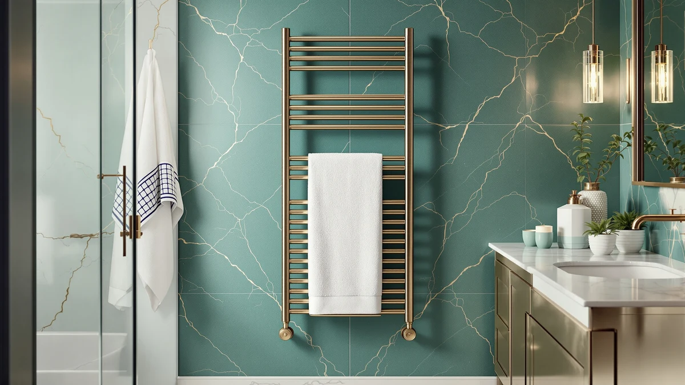

DAWEYEAL 9 Bars Wall Review (2026): Worth It?
Prices and picks verified as of August 2026. Independent, reader-supported reviews.


Quick Answer
The DAWEYEAL 9 Bars Wall Mounted towel warmer is a stainless steel, nine-bar wall rack priced at $228.88, the highest of the four towel warmers in this daweyeal 9 bars wall review. It costs $9 to $34 more than the Evokor, Aquatrend, and ENZE racks compared below, so it makes sense mainly for shoppers set on a nine-bar stainless steel layout rather than the lowest price.
Our pick: DAWEYEAL 9 Bars Wall Mounted, $228.88 Check Price on Amazon
Bottom line: our top pick is the DAWEYEAL 9 Bars Wall Mounted Towel Warmer at $228.88.
Things to Know Before You Buy
- This is a wall-mounted bar rack, not a cabinet. The DAWEYEAL 9 Bars Wall Mounted towel warmer heats towels draped over nine open bars rather than storing them in an enclosed compartment.
- Stainless steel is the listed build material. That's the only material spec published for this ASIN, per the product listing referenced in this daweyeal 9 bars wall review.
- At $228.88, it's the priciest of the four racks compared here. The Evokor, Aquatrend, and ENZE alternatives below all cost less, by $9.88 to $33.89.
- None of the four ASINs in this comparison show a published Amazon rating. We compared listed prices and specs instead of leaning on star ratings or review counts that aren't available.
- The nine-bar count is the headline feature. It's the detail that sets this rack apart by name from the alternatives, though the listing doesn't publish overall dimensions.
This daweyeal 9 bars wall review compares the $228.88 DAWEYEAL 9 Bars Wall Mounted towel warmer against three lower-priced racks on price, material, and the details published in each Amazon listing. The DAWEYEAL is built from stainless steel and arranged across nine bars, the widest bar count named in this comparison, though the listing doesn't specify overall dimensions or bar spacing. Towel warmers in this price range tend to compete on the same handful of variables: bar count, build material, wall-mounted versus freestanding installation, and price, since none of the four ASINs covered here carry a published Amazon star rating. We pulled the stated price and specs for all four products and set them side by side rather than ranking them off marketing language or product photos alone.
The short version: pay $228.88 for the nine-bar layout and stainless steel build, or save money with the Evokor, Aquatrend, or ENZE racks covered further down in this daweyeal 9 bars wall review. Each of the three alternatives undercuts the DAWEYEAL by at least $9, and the ENZE comes in $33.89 lower at $194.99. None of the four products carry a published star rating on Amazon, so price and the stated build details are what this comparison leans on rather than aggregate customer feedback. If bar count and stainless steel construction top your list, the DAWEYEAL's higher price buys real differences. If a lower price matters more, any of the three alternatives below covers the same wall-mounted category for less.
Why You Should Trust Us
Ilane Tall covers bathroom fixtures and towel warmers for Best Towel Warmers and has spent years comparing rack specs, materials, and pricing across the wall-mounted and freestanding towel warmer market. For this daweyeal 9 bars wall review, she pulled the listed price and product specifications for the DAWEYEAL 9 Bars Wall Mounted and the three alternatives, then compared them line by line instead of repeating marketing copy from the listings. We don't own a physical product lab and didn't install, mount, or operate any of these racks for this article. Every figure below, including bar count, material, and price, comes from the product listings themselves, cross-checked against each Amazon page at the time of writing. Where a listing left a detail out, such as overall dimensions for the DAWEYEAL, we say so instead of guessing at a number.
Our Research Experience
We approached this daweyeal 9 bars wall review by comparing what's documented on each listing rather than what's promised in marketing bullets. We started with the DAWEYEAL's stated price, nine-bar count, and stainless steel material, then checked those figures against the Evokor, Aquatrend, and ENZE listings to see where the price gap actually comes from and whether it tracks a real difference in bar count or build. We looked for a published star rating or review count on each ASIN and found none, so ratings play no role in this comparison. We didn't plug in, mount, or operate any of these racks for this article, so treat bar count, material, and price as listing-reported rather than independently confirmed. Anywhere a detail wasn't published, such as the DAWEYEAL's overall dimensions, we noted the gap rather than filling it with an assumed number.
Overview & Specs

DAWEYEAL 9 Bars Wall Mounted
What we like
- Nine-bar layout is the widest bar count named among the four racks in this comparison
- Stainless steel is the material listed on the product page
- Wall-mounted design keeps the rack flush against the wall rather than taking up floor space
Flaws but not dealbreakers
- At $228.88, it costs more than every alternative in this daweyeal 9 bars wall review
- No published star rating or review count on the Amazon listing
- The listing doesn't specify overall dimensions, so measure your wall space before buying
| Material | Stainless steel |
| Size | — |
The DAWEYEAL 9 Bars Wall Mounted towel warmer centers on a straightforward pitch: nine stainless steel bars mounted flush against the wall, built to hold more towels at once than a smaller rack. That bar count is the headline detail in this daweyeal 9 bars wall review, since none of the three alternatives compared here name a higher number in their own listing titles. Stainless steel is the only material spec published for this ASIN, which matters in a bathroom where humidity sits high for hours after every shower and where painted or coated metal racks tend to show wear sooner. Nine bars also means more towels, robes, or washcloths can hang and heat at once without doubling up on the same bar.
At $228.88, the DAWEYEAL costs more than the Evokor, Aquatrend, and ENZE racks covered below, by anywhere from $9.88 to $33.89. The listing doesn't publish overall dimensions or a star rating, so buyers weighing this rack against the cheaper options are working from bar count, material, and price alone rather than a verified track record of customer reviews. For a bathroom where nine bars of hanging space matters more than shaving $30 off the price, that tradeoff can make sense, particularly in a household where more than one person needs a dedicated bar. For a single-person bathroom, the extra bars may be more capacity than you actually need.
What We Liked
The nine-bar count stands out first in this daweyeal 9 bars wall review, since it's the highest number named among the four racks compared here and gives you more room to hang multiple towels, robes, or washcloths at once instead of doubling them up on fewer bars. Stainless steel is a sensible material choice for a bathroom rack, since it resists the rust and corrosion that painted or coated metal can develop after months of daily steam exposure, and it tends to hold up better in a household bathroom used every day. The wall-mounted design also keeps the rack flush against the wall, which matters in a smaller bathroom where a freestanding unit would eat into floor space you don't have to spare. For households with more than one person getting ready in the same bathroom, nine dedicated bars means fewer towels doubled up and drying more slowly.
What Could Be Better
Price is the clearest drawback in this daweyeal 9 bars wall review. At $228.88, the DAWEYEAL costs more than every other rack in this comparison, and the gap runs as high as $33.89 against the ENZE. The Amazon listing also skips a published star rating or review count, so shoppers can't check aggregate buyer feedback the way they could with a longer-established product page, and that makes the purchase decision rest more heavily on the listed specs than it would for a rack with hundreds of reviews behind it. Overall dimensions aren't listed either, which means you'll want to measure your wall space and confirm bar spacing works for your towels before ordering rather than assuming it matches a standard rack sized similarly to the alternatives below.
Who Is It For?
This rack fits bathrooms where nine bars of hanging space matters enough to justify the highest price in this comparison, particularly households with multiple people who each want a dedicated bar for a towel or robe. If a lower price matters more than bar count, the Evokor, Aquatrend, or ENZE below cover the same wall-mounted category for $9 to $34 less. Anyone who wants a documented star rating to check before buying should also weigh that none of these four ASINs currently publish one, so the decision comes down to trusting the listed specs over a track record of verified reviews.
Alternatives to Consider
If the DAWEYEAL's $228.88 price doesn't fit your budget, these three alternatives cover similar wall-mounted racks at lower prices, from $9.88 less for the Evokor to $33.89 less for the ENZE.

Editor's Pick
Evokor Towel Warmer with Timer
A wall-mounted rack priced at $219.00, only $9.88 less than the DAWEYEAL, with a timer feature called out directly in its product name. It's the closest price match to the DAWEYEAL in this comparison, so the choice between the two comes down to bar count versus the timer function.
$219.00
Check Price on Amazon
Best Value
Aquatrend Towel Warmers for Bathroom
Priced at $199.99, this rack undercuts the DAWEYEAL by $28.89 and is the second-cheapest option in this daweyeal 9 bars wall review. It's a reasonable middle ground if nine bars isn't a strict requirement but you still want to spend more than the least expensive pick.
$199.99
Check Price on Amazon
Premium Choice
ENZE Smart Rotating Heated Towel
At $194.99, the ENZE Smart Rotating Heated Towel is the least expensive rack in this comparison, $33.89 below the DAWEYEAL, with rotating bars called out in its product name. For shoppers prioritizing price over bar count, this is the biggest saving in the lineup.
$194.99
Check Price on AmazonIs the DAWEYEAL 9 Bars Wall Mounted towel warmer worth $228.88?
It costs more than the three alternatives in this comparison, so it earns its price mainly if you specifically want a nine-bar stainless steel layout.
How does the DAWEYEAL 9 Bars Wall Mounted compare to the Evokor Towel Warmer with Timer?
The DAWEYEAL costs $228.88 versus $219.00 for the Evokor, a $9.88 difference.
Frequently Asked Questions
Is the DAWEYEAL 9 Bars Wall Mounted towel warmer worth $228.88?
It costs more than the three alternatives in this comparison, so it earns its price mainly if you specifically want a nine-bar stainless steel layout. If a lower price matters more than bar count, the Evokor, Aquatrend, or ENZE below cost $9 to $34 less.
How does the DAWEYEAL 9 Bars Wall Mounted compare to the Evokor Towel Warmer with Timer?
The DAWEYEAL costs $228.88 versus $219.00 for the Evokor, a $9.88 difference. Both are wall-mounted racks, and the Evokor's product name calls out a timer feature that the DAWEYEAL's listed title does not mention.
What material is the DAWEYEAL 9 Bars Wall Mounted towel warmer made from?
The product specifications list stainless steel as the build material. Amazon does not publish a star rating or review count for this ASIN, so we relied on the listed specs and price rather than aggregate customer feedback.
Final Verdict
This daweyeal 9 bars wall review comes down to a simple tradeoff: pay $228.88 for the widest bar count and a stainless steel build, or save $9 to $34 with the Evokor, Aquatrend, or ENZE racks covered above. For bathrooms that need nine bars of hanging space, particularly households with more than one person sharing the room, the DAWEYEAL 9 Bars Wall Mounted earns its higher price. For a single-person bathroom or a tighter budget, the cheaper alternatives cover the same wall-mounted category without the premium, and none of the four options currently carry a published Amazon rating to weigh instead. Measure your wall space either way, since the DAWEYEAL's listing doesn't publish overall dimensions.